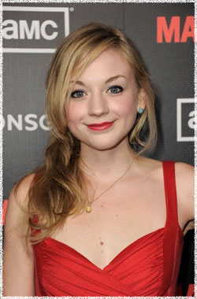

Эмили Кинни
 Бет прошла долгий путь с момента отчаяния, связанного со смертью своей матери и ужасной реабилитацией которая почти довела её до самоубийства. Она остается со своими родными, отцом Хершелом и сестрой Мэгги. С относительной близостью по возрасту, она и Карл сдружились.
Эмили Кинни - Нью-Йоркская актриса родом из штата Небраска. В настоящее время она играет Бет в Ходячих мертвецах. Кинни вернулась во второй сезон сериала Большая буква «Р» на канале Showtime, играя роль Эмили. Она также появилась в качестве гостя в сериалах Правильная жена, Закон и порядок: Специальный корпус и Преступное намерение, Необычный детектив и в игре Killers. Кинни появились в фильме Простые сложности, режиссера Нэнси Мейерс, а также в независимом фильме Сотрясение, режиссёра Стейси Пэйсон.
По прибытию в Нью-Йорк Кинни немедленно дебютировала в постановке Iphigenia 2.0 в театре Signature под руководством Тины Ландау. Она тогда продолжала играть Венди Дарлинг в ежегодном фестивале Alabama Shakespeare Питера Пэна. На Бродвее Кинни была замечена как Анна в производстве Spring Awakening. Она играла главную роль вместе Эстель Парсон.
Кинни также певица / композитор. Она недавно выпустила пять EP песен под названием "Синяя зубная щетка", которые можно найти на ITunes и CDBaby. Она играет свою оригинальную музыку в разных местах по всему Нью-Йорку, в том числе в Rockwood мюзик-холл и Pianos. Кинни любит писать и часто делится своими приключениями в Нью-Йорке для журнала Backstage Magazine.
Наиболее известна по фильмам:
Простые сложности
Правильная жена
Большая буква «Р»
Закон и порядок. Специальный корпус